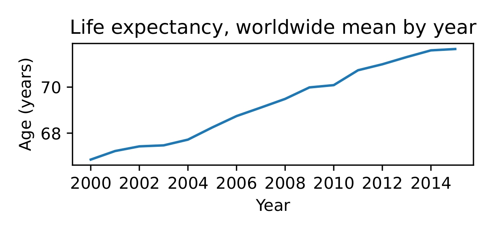
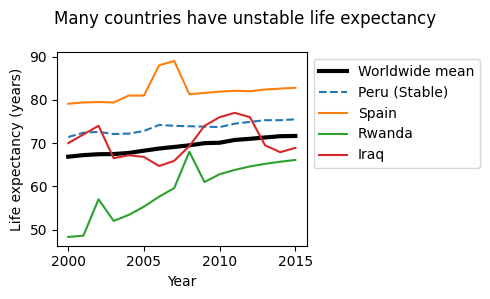
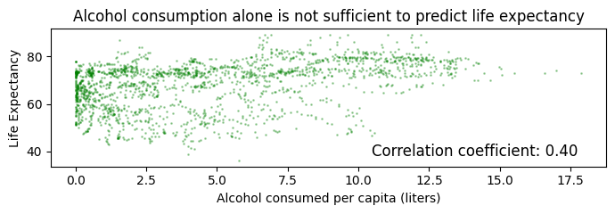
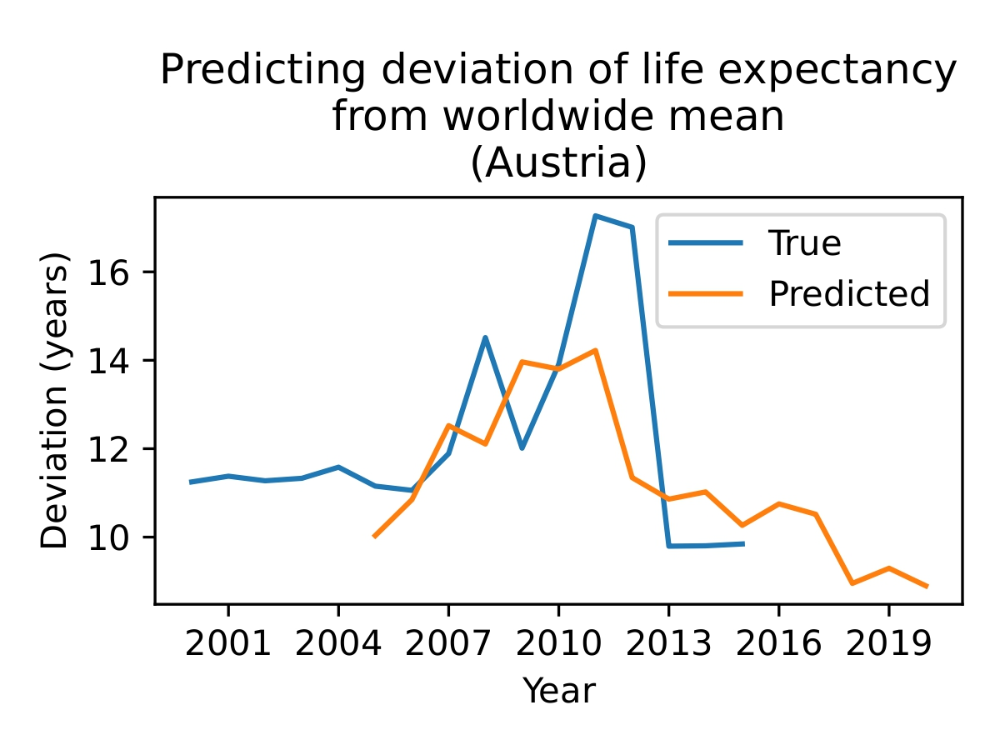
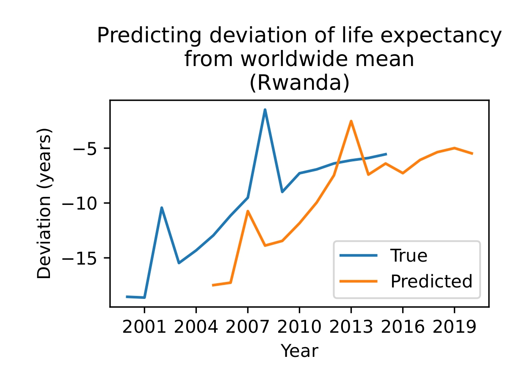
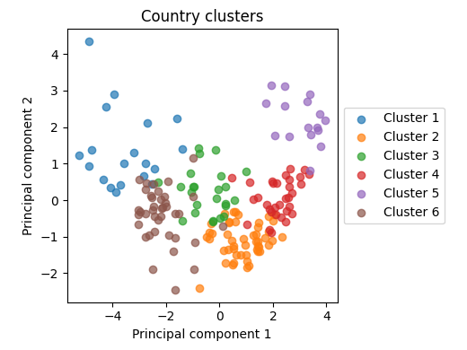

Predicting future life expectancy in countries using present data

This project is a paper with associated code.
As a student in BYU’s Applied and Computational Mathematics Emphasis (ACME), this semester I took a class in modeling with data and uncertainty. In it my peers and I learned (among many other things) about the theoretical underpinnings of various classification and regression techniques. To enhance our practical understanding of machine learning, we were assigned an open-ended group project—given a list of a dozen or so datasets from Kaggle, we were pick a dataset, ask some interesting question about the data, and attempt to answer it with the techniques we’d learned this semester. Then we were to summarize our findings in a five-page paper.
I wrote the paper with my classmate Rebecca Gee. She focused primarily on data preparation and understanding what the features in the dataset actually meant (what in the world is “Income Composition of Resources”? She figured it out), and I focused on the feature engineering and machine learning methods.
I usually manage my code with Git and GitHub, but this time I opted for a Jupyter notebook in Google Colab to avoid training the models on my system. View the code here. It proved challenging to export the large notebook to other formats (.pdf, .html). Troubleshooting would’ve been easier had I coded in a more robust way, by saving trained models and such. The time I spent wrestling with the notebook export reminded me to be more careful next time, in spite of any looming deadlines.
The original paper is a .pdf document, but for a better reading experience, I’ll copy it as best I can below.
Predicting Future Life Expectancy with Present Data
Matthew Ward, Rebecca Gee
Abstract. Predicting life expectancy is crucial for understanding global health trends and guiding policy decisions. We aim to predict the life expectancy of a country five years into the future using socio-economic and health-related features. After engineering features to normalize trends and focus on deviations from global averages, we employ several machine learning models, including Random Forest and Gradient Boosting, to make predictions. Initial results demonstrate modest predictive performance when evaluated on unseen countries, with features like income composition and vaccination rates contributing significantly. However, cluster-based evaluation reveals that the models struggle to generalize across diverse regions, highlighting challenges in capturing global heterogeneity.
1. Research question and overview of the data
Using the WHO Life Expectancy dataset, how well can we predict the life expectancy of a given country in 5 years from now?
Previous research done with similar datasets used a variety of techniques. Lipesa, et al. used extreme gradient boosting (XGBoost) and pointed to thinness, schooling, infant deaths and BMI as leading factors in Life Expectancy. Gill et al. used linear regression to find a correlation between adult mortality and GDP per capita.
The Life Expectancy Dataset contains data from countries over a fifteen year period. Below we outline a few.
| Feature | Explanation |
|---|---|
| Life Expectancy | Average national life expectancy (years) |
| Alcohol | Alcohol consumed per capita (liters) |
| Percentage expenditure | Government expenditure on health (% of GDP) |
| Polio | Percent population vaccinated against polio |
| 15 other features. See Appendix A. |
This data captures a variety of different ideas useful in predicting life expectancy, for instance, immunizations, BMI and adult mortality seem to be good indicators of life expectancy. Other datasets with less information or less countries would be less suited to this model.
One weakness of the dataset is an abundance of missing, incomplete or bad data, which we can correct or impute. The columns associated with diseases often use different metrics, and are therefore hard to compare. For example, it would be hard to ask which disease has the biggest impact on life expectancy, since each disease is not measured the same way.
We will use this dataset to predict life expectancy in the future, and to determine what components most contribute to life expectancy.
2. Data Cleaning / Feature Engineering
There were four countries (North and South Korea, Sudan, and South Sudan) that lacked a substantial portion of their data, necessitating their removal. We also dropped the Population column because it was missing data and was not a key feature of the model.
We also noticed that there were problems with the “GDP” data column. Much of it was missing or inaccurate. For this reason, we chose to take the GDP from another dataset, which we verified had accurate and complete numbers by comparing a random subset of the numbers to those found by the World Bank.
We imputed the rest of the missing data using an imputer built with the k-Nearest Neighbors algorithm (KNNImputer from scikit-learn).
We hope that given statistics for a year of data, we can predict life expectancy five years later. Now, to do this, we will not simply train a model to predict life expectancy, since it is increasing worldwide.

Thus we create new features that will more accurately indicate if the model is learning to predict meaningful trends.
- Deviation from worldwide mean. Unlike life expectancy worldwide, this feature will on average be flat.
- Deviation from worldwide mean in five years. Of course, it is not possible to calculate this feature for the last five years represented in the dataset. After calculating this feature wherever it is possible, we drop rows in the last five years.
- Five-year change in deviation from worldwide mean. This is the output of our model. It should be relatively flat and close to zero, unlike a five-year change in life expectancy, which is normally greater than zero.
3. Data Visualization and Basic Analysis

We have already seen that on average, life expectancy is increasing, however, it is not always stable. In some countries it wildly fluctuates, and in others it is quite continuous (Figure 2). Peru is an example of a country with a more or less constant rate of change in its life expectancy, matching the trend of the worldwide mean quite nicely. However, we see that in Spain, there was a sharp increase for about two years, after which it resumed it’s previous value. Life expectancy in Iraq varies wildly around the mean and Rwanda increases steadily with a couple irregularities where life expectancy was much higher than one might expect.
Life expectancy prediction is not a trivial problem. The data often contradicts common assumptions about what helps and hurts, possibly because of conflating variables (see Figure 3).

4. Learning Algorithms and In-depth Analysis
We split the dataset into training (80%) and testing (20%) sets, grouping by country.
We trained models on the deviation from the worldwide mean in five years, a feature we engineered as described in Section 2.
Using Bayesian optimization via Optuna, we optimized hyperparameters for Random Forest, Gradient Boosted, XGBoost, as well as Ridge regression models with cross-validation, again grouping data by country. As can be seen in our code, after hyperparameter tuning, the XGBoost regressor had the best average validation score during cross-validation. On the test set it had a coefficient of correlation of 0.30, indicating that while its performance was not stellar, it did learn something meaningful—after all, it was scored on data from countries it had never seen before.


The five most important features for the best model were (in order) present life expectancy (naturally), HIV/AIDS cases, Polio vaccinations, ICOR, and Diphtheria vaccinations (see Appendix A).
However, changing the way we split the data for training and testing proves that our initial model is not generalizable. In our new testing set, we clustered the data into eight clusters by performing PCA on the normalized data, using k-means clustering to refine the groups, and merging clusters that were too small.

We used these clusters as folds in cross-validation, except for Cluster 4, which we randomly selected and set apart as a test set. This means that the models saw plenty of data, but had to use what they learned on countries that were substantially different than anything they had previously seen.
As before, we trained various models on the rest of the data, tuning hyperparameters for various models with cross-validation to optimize performance. Using the best model (XGBoost), we obtained a coefficient of correlation of 0.15 on the test set. Compared to the previous coefficient of correlation of 0.30, this is drastically worse.
It is possible to predict future life expectancy in a target country given data from countries similar to it. However, predicting life expectancy in a country that is different from the rest is much more difficult.
5. Ethical Implications and Conclusions
Predicting life expectancy in the future has several important ethical implications. The potential for future humanitarian work and prevention of decreasing life expectancy is powerful. The model is quite harmless, but there are a few ways it could be used negatively.
For instance, in war, if an enemy had enough data, they could identify key statistics to weaken the other country’s health using methods like these. In addition, overreacting to the model could create a self-fulfilling prophecy.
To ensure the model functions effectively, it requires data from a diverse range of countries. Organizations like the WHO must ensure this data is managed responsibly and securely.
In conclusion, predicting life expectancy in the future is possible with sufficient data. In order to predict the life expectancy, a model with many different countries is needed, and the results can be relatively accurate on a short time period.
Appendix
A. Features of Dataset
(in no particular order)
- Status (Developed/Developing)
- Life Expectancy (age)
- Adult Mortality (Probability of dying between 15-60 years of age per 1000)
- Infant deaths (number per 1000)
- Alcohol (consumed per capita in liters)
- Percentage expenditure (Expenditure on health percentage of GDP)
- Hepatitis B (Percentage immunizations)
- Measles (number of cases per 1000)
- BMI (average of population)
- Under 5 deaths (number per 1000)
- Polio (Percentage immunizations)
- Total expenditure (percentage expenditure on health of total government expenditure)
- Diphtheria (Percentage immunizations)
- HIV/AIDS (Deaths per 1000 live births)
- GDP (per capita in USD), Population (of country)
- Thinness 1-19 years (prevalence of thinness)
- Thinness 5-9 years (prevalence of thinness)
- Income Composition of Resources (ICOR) (Human Development Index in terms of ICOR)
- Schooling (number of years of schooling)
B. Countries in Clusters
Cluster 1:
Afghanistan, Angola, Central African Republic, Chad, China, Congo, Democratic Republic of the Congo, Equatorial Guinea, Ethiopia, Gabon, Guinea, Haiti, India, Lao People’s Democratic Republic, Liberia, Niger, Nigeria, Somalia, Uganda
Cluster 2:
Albania, Antigua and Barbuda, Armenia, Bahrain, Belize, Brunei Darussalam, Cabo Verde, Colombia, Cuba, Egypt, El Salvador, Fiji, Grenada, Guatemala, Guyana, Honduras, Iran (Islamic Republic of), Israel, Jamaica, Jordan, Kuwait, Kyrgyzstan, Libya, Malaysia, Maldives, Mauritius, Mexico, Mongolia, Morocco, Nicaragua, Oman, Panama, Paraguay, Peru, Qatar, Saint Vincent and the Grenadines, Sao Tome and Principe, Saudi Arabia, Seychelles, Singapore, Sri Lanka, Tajikistan, Thailand, The former Yugoslav republic of Macedonia, Tunisia, Turkmenistan, United Arab Emirates, Uzbekistan, Viet Nam
Cluster 3:
Algeria, Azerbaijan, Bolivia (Plurinational State of), Bosnia and Herzegovina, Costa Rica, Dominican Republic, Ecuador, Georgia, Iraq, Kiribati, Lebanon, Micronesia (Federated States of), Montenegro, Philippines, Samoa, Solomon Islands, Suriname, Syrian Arab Republic, Tonga, Trinidad and Tobago, Turkey, Ukraine, Vanuatu, Venezuela (Bolivarian Republic of)
Cluster 4:
Argentina, Bahamas, Barbados, Belarus, Brazil, Bulgaria, Chile, Croatia, Cyprus, Czechia, Estonia, Finland, Greece, Hungary, Italy, Kazakhstan, Latvia, Lithuania, Malta, Poland, Portugal, Republic of Moldova, Romania, Russian Federation, Saint Lucia, Serbia, Slovakia, Slovenia, Spain, United Kingdom of Great Britain and Northern Ireland, United States of America, Uruguay
Cluster 5:
Australia, Austria, Belgium, Canada, Denmark, France, Germany, Iceland, Ireland, Japan, Luxembourg, Netherlands, New Zealand, Norway, Sweden, Switzerland
Cluster 6:
Bangladesh, Benin, Bhutan, Botswana, Burkina Faso, Burundi, Cambodia, Cameroon, Comoros, Côte d’Ivoire, Djibouti, Eritrea, Gambia, Ghana, Guinea-Bissau, Indonesia, Kenya, Lesotho, Madagascar, Malawi, Mali, Mauritania, Mozambique, Myanmar, Namibia, Nepal, Pakistan, Papua New Guinea, Rwanda, Senegal, Sierra Leone, South Africa, Swaziland, Timor-Leste, Togo, United Republic of Tanzania, Yemen, Zambia, Zimbabwe